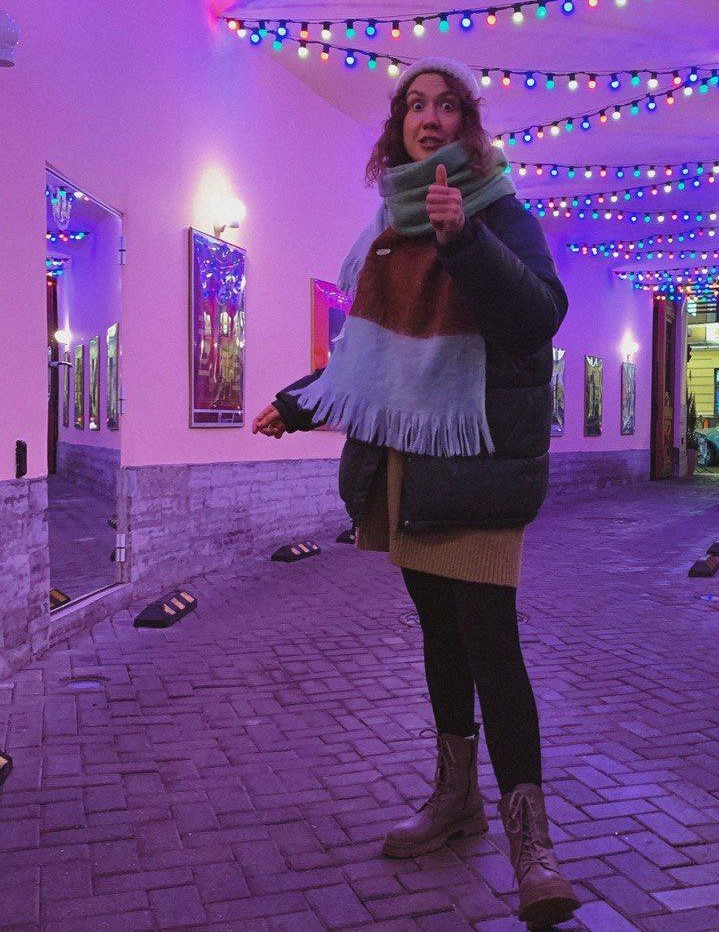

Малушина Ксения

Меня зовут
Малушина Ксения.
Я - дипломированный практический психолог и арт-терапевт.(А так же графический дизайнер)
Что такое арт-терапия(АТ)?
АТ - направление психотерапии, где основным инструментом работы становится творчество и искусство.
Для детей от 5 лет АТ актуальна если ваш ребенок:
• проявляет агрессию
• гиперактивен
• имеет страхи или фобии
• проявляет тревожность, замкнутость, отстранённость
• имеет проблемы с поведением
• пережил травматический опыт и др.
Для взрослых АТ поможет в работе с такими случаями, как:
• гнев, агрессия
• обида, чувство вины, стыда
• страхи и комплексы
• травматический опыт
• тревожность
• низкая самооценка и др.
АТ помогает повысить уверенность в себе, восполнить ресурс и вернуть радость жизни.